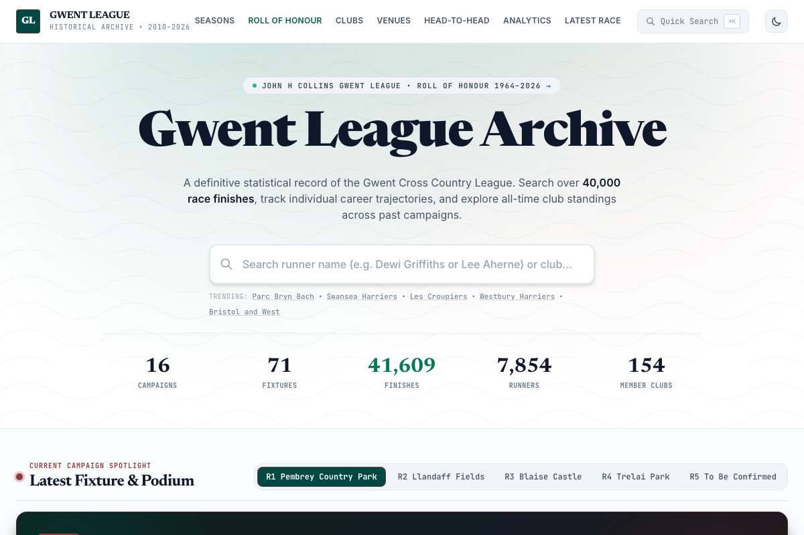
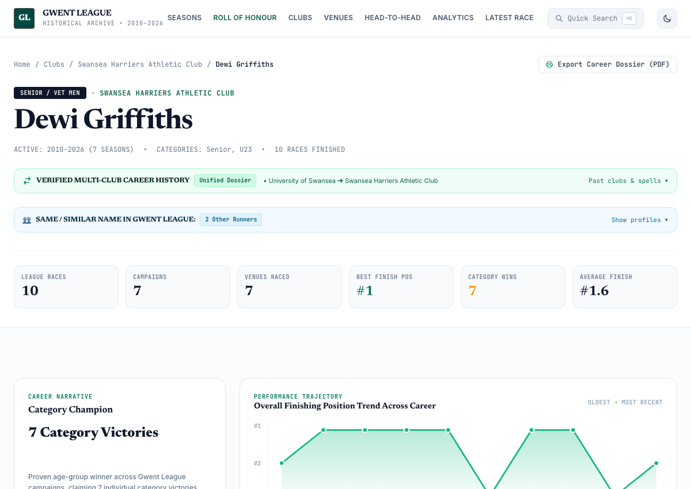
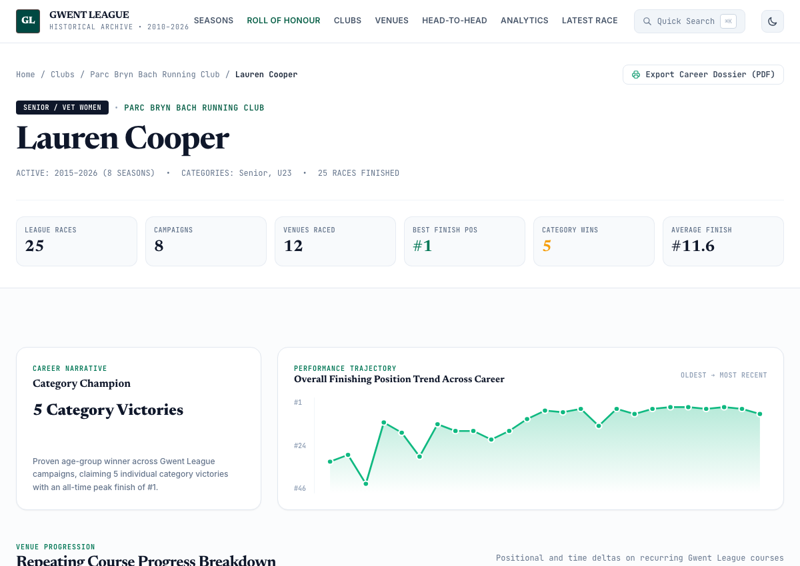
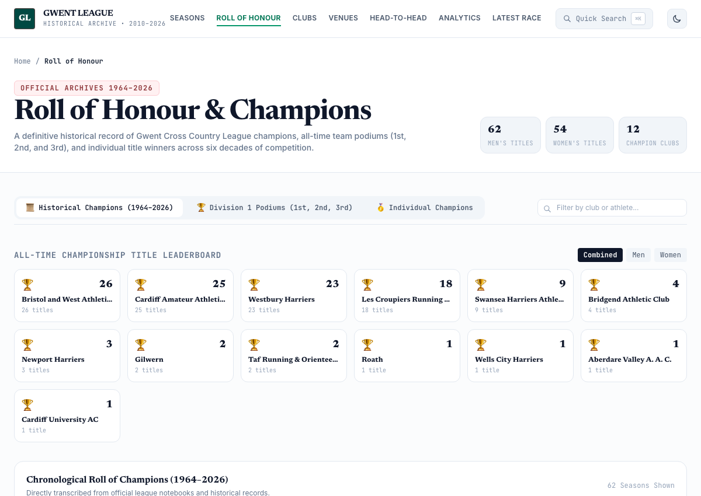
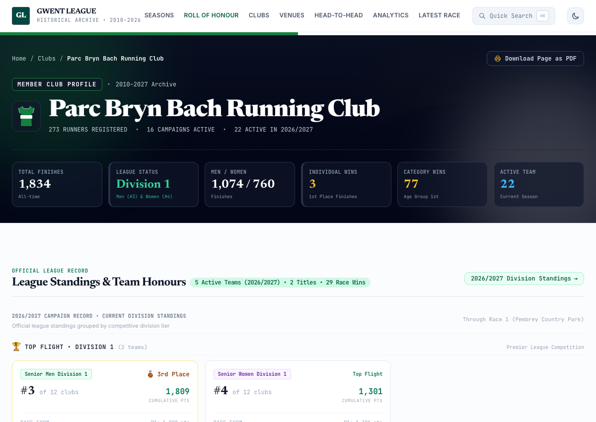
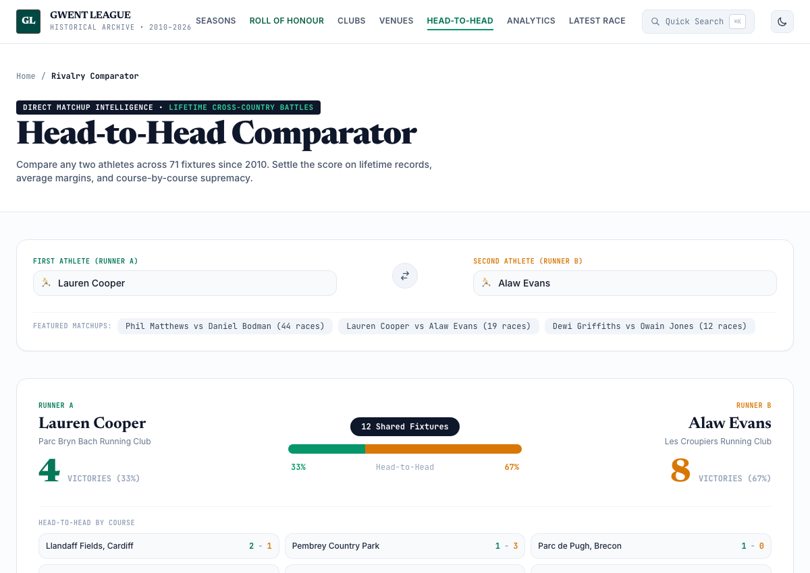
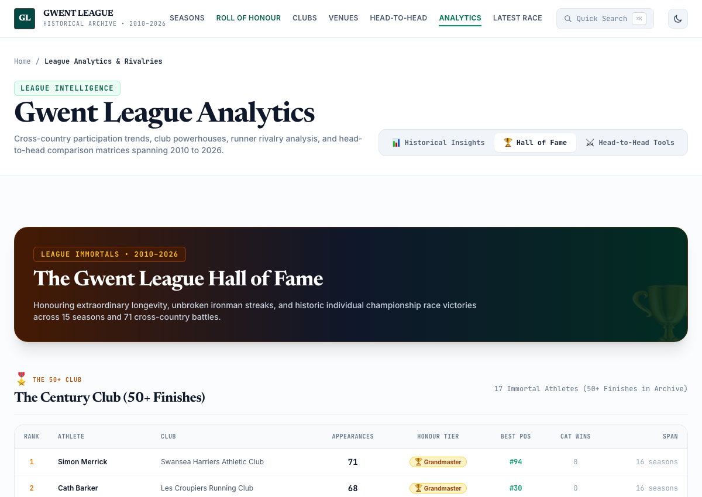
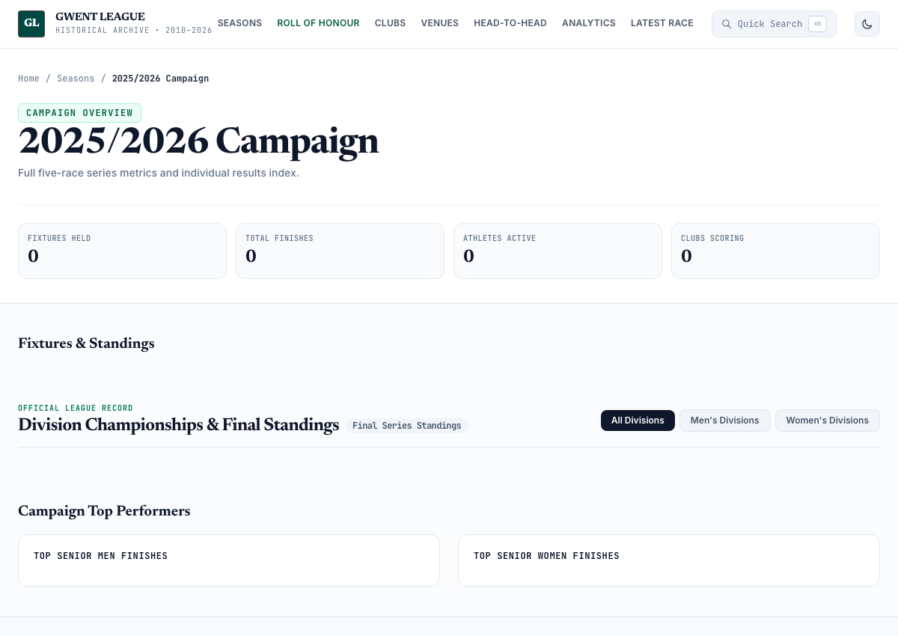

Instant Athlete & Club Search
Find any runner or club in milliseconds with autocomplete and quick keyboard shortcuts.
The search system indexes over 14,000 athletes and 100+ clubs across all 16 seasons. You can search directly from the home page or invoke the Quick Search Command Palette from any page simply by pressing ⌘K (Mac) or Ctrl+K (Windows).
- Instant suggestions as you type (athletes, clubs, venues)
- Direct navigation to athlete profiles and club hubs
- Club filters to browse entire team rosters

Gwent League home page featuring macro statistics and athlete searchAthlete Career Profiles
Every race, time, position, season standing, and course record in one personal profile.
Each athlete profile provides a complete historical ledger of their career in the Gwent League. Nothing is lost—every match result since 2000 is accounted for.
Key Profile Highlights:
- Career Summary: Total finishes, wins, podium finishes, best overall position, and total points scored.
- Season Campaigns: Detailed best-4 season score tracking, division titles, and end-of-year standings.
- Venue & Course Breakdown: Personal fastest times and average positions across iconic championship courses like Blaise Castle, Margam Park, Pembrey, and Pontypool.
- Transfer Lineage: Unified career profiles for athletes who represented multiple clubs (e.g. Dan Bodman across Aberdare and Pontypridd).

Dewi Griffiths profile: 33 races, 32 wins, and course records
Lauren Cooper profile: season bests, podium counts, and head-to-head recordsRoll of Honour & Champions (1964–2026)
The definitive record of team titles, Division 1 podiums, and individual champions.
While complete race-by-race digital results currently begin in 2000, the official Roll of Honour transcribes the complete list of League Champions from handwritten records dating back to 1964 across three views:
- 62-Year Historical Champions (1964–2026): Full Senior Men (from Gilwern in 1964) and Senior Women (from 1972) champions, with all-time title leaderboards (Westbury 13, Bristol & West 11, Cardiff AAC 10, Les Croupiers 10).
- Division 1 Team Podiums (2000–2026): Gold (1st Champions), Silver (2nd Runners-Up), and Bronze (3rd Place) teams for every digital season with cumulative points.
- Individual Champions & Multi-Title Legends: Season title winners and multi-crown holders like Phil Matthews (4x), Kath Matthews (4x), Kate Roberts (2x), and Alaw Evans (2x).

Division 1 podiums and multi-title athlete leaderboardsClub Hubs & All-Time Dream Teams
Club honours, division campaigns, active squads, and all-time top 5 Men / 4 Women.
Every member club has a dedicated portal. Features include accurate racing kit renders, full squad rosters, division titles, and the All-Time Dream Team.
The algorithm calculates each club’s ultimate scoring team (Top 5 Senior Men and Top 4 Senior Women) across 16 seasons based on average race points (minimum 5 appearances), showing the greatest squad a club could assemble in league history.

Club profile displaying team honours, squad rosters, and Dream Team scoringHead-to-Head Rivalry Comparator
Settle friendly rivalries: compare any two athletes across their mutual races.
The Head-to-Head tool matches any two runners who have lined up together in the Gwent League. It filters all 71 fixtures to isolate the exact races both finished, calculating:
- Head-to-Head Record: Wins, losses, and win percentages.
- Finish Margin & Time Delta: Average positions ahead/behind and cumulative time separation.
- Race-by-Race Log: Detailed table of every mutual fixture with positions, times, and venue locations.

Head-to-head matchup showing win rate, time deltas, and mutual race historyAll-Time Hall of Fame & Century Club
Celebrating league longevity: 50+ finishes, race winners, and iron streaks.
Cross country is the ultimate test of resilience. The Analytics & Hall of Fame honors athletes who have shown extraordinary dedication to the league:
- The Century Club: An elite brotherhood of over 100 dedicated athletes who have completed 50 or more league fixtures (led by J. Davies, Morgan Davies, Andrew Jones, Ceri Davies, and Simon Merrick with 100+ finishes).
- All-Time Race Winners: Ranked leaderboard of every runner who has ever taken individual victory in a Senior Men or Senior Women fixture.
- Iron Streaks: The longest unbroken streaks of consecutive race appearances without missing a fixture.

The 50+ finishes Century Club honor roll and race winners leaderboardSeasons & Official Division Tables
Explore any season from 2000 to 2026: division promotion/relegation and match results.
Every season has its own campaign hub. You can inspect match-by-match results, weather conditions, course elevation profiles, and official division tables:
- Division 1 to Division 4 Standings: Full Senior Men, Senior Women, Reserve, and Masters tables.
- Promotion & Relegation Status: Clearly marked end-of-season outcomes.
- Full Race Results: Every finisher, club, category, and gun time across all fixtures.

Season campaign hub showing fixtures, division standings, and championsReady to Explore Your Racing History?
Dive into the archive, look up your club teammates, check out your head-to-head records, and celebrate 16 seasons of digital race history (alongside 62 years of champions) across Wales and the West Country.